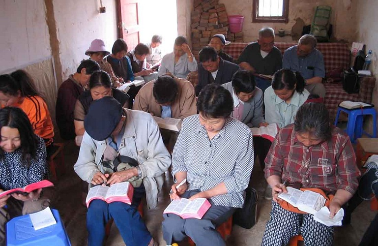
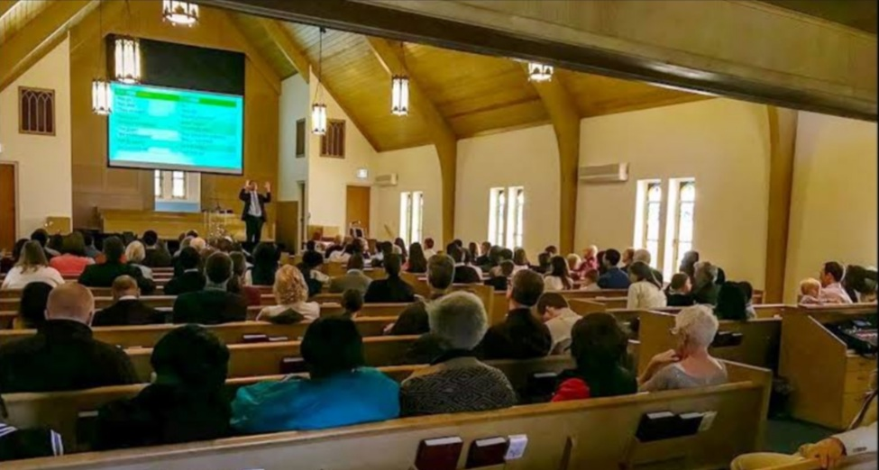

Sabbath School/ Lesson Study
8:00 - 10:30 a.m. From its inception Sabbath School has focused on four emphases
that are still prominent to this day:
Fellowship Development, Community Outreach, Bible Study,
and Foriegn Mission. A Solid Balance of these elements characterizes the most vital
Sabbath Schools around the world.

Divine Service
10:30 - 12:00 a.m. The Sabbath's main worship program where reverence is expressed,
solemnity is strictly observe, and hearts fully resting, worshiping,
singing praises, and reflecting in the words and presence of God.

Adventist Youth Programs
2:00 - 5:30 am.m. The whole afternoon programs are to be led by Adventist
Youths and Children. The salvation of youth through Jesus Christ,
We understand youth ministry to be that work of the church that is conducted for,
with and by young people.